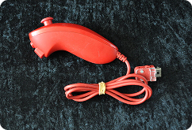
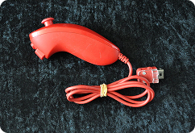

Plug-N-Play
Console: Jakks Pacific Plug & Play Brand: Namco Damage: Time
Jakks Pacific, known for their various toys over the years, briefly dabbled in the plug-and-play market of games during the early 2000s. As the name suggests, these lines of games were as simple as plugging in the assorted A/C jacks into your tv, and you’re set. This model specifically featured only NAMCO games, which included Pac-Man, Dig Dug, Galaxian, Bosconian, and Rally-X. Interestingly, these games are not merely emulations, but instead recreations of the arcade classics, with minor inaccuracies.
I couldn’t quite tell you when I received this tiny system. It had to be when I was extremely young, as I was born in 2003, but can’t recall when I actually got it. Regardless, this is a simple case of the age of the system coming to a point where a console/controller is simply unusable. I also didn't notice until taking the photo that the red A/C jack is missing. The plug-and-play came with a trio of yellow, white, and red wires. Yet, somehow, the red wire is missing? Regardless, this is one of the few examples on this list of a controller also working as a console as well.

 
